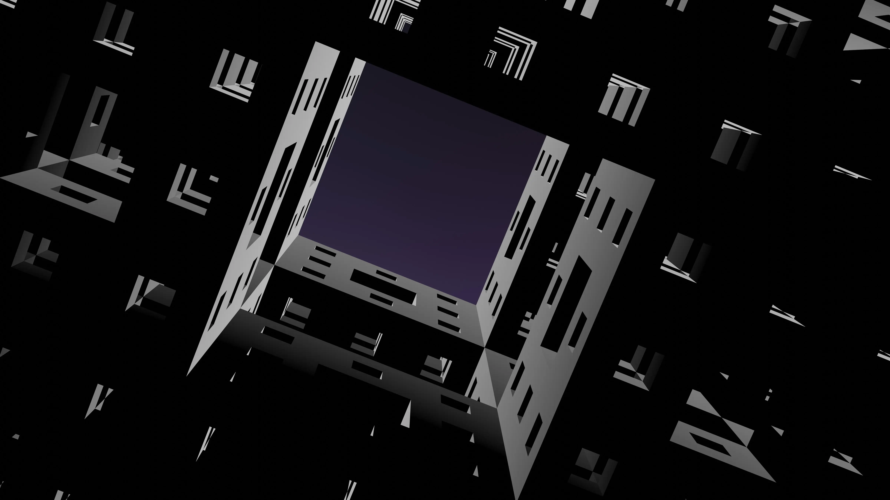

Web design is a constantly evolving field, with new trends emerging every year.
In this article, we'll take a look at some of the top trends in web design for the year 2023.
Bold Typography:
Typography is a crucial element of web design, and in 2023, we can expect to see more bold and eye-catching typefaces. Designers are using bold typography to make a statement and create impactful headers, titles, and subtitles.
Dark Mode:
Dark mode is a design trend that has been growing in popularity over the past few years, and it is expected to continue in 2023. Dark mode provides a more visually engaging and usable experience for users, especially in low-light conditions. It also saves battery life on mobile devices and reduces eye strain.
3D Elements:
3D elements, such as illustrations, animations, and graphics, are becoming increasingly popular in web design. 3D elements add depth and dimension to websites and help to create a more immersive user experience.
Asymmetrical Layouts:
Asymmetrical layouts are becoming more popular as designers look for ways to break away from traditional symmetrical designs. Asymmetrical layouts add interest and create visual balance in a unique way, making websites stand out and look fresh.
Interactive Elements:
Interactive elements, such as animations, hover effects, and microinteractions, are becoming increasingly popular in web design. Interactive elements add engagement and help to create a more immersive user experience, making websites more memorable and enjoyable to use.
Natural Colors and Textures:
Natural colors and textures are becoming more popular in web design as designers look for ways to create a more organic and natural look and feel. Natural colors and textures, such as earth tones and organic patterns, help to create a calming and inviting atmosphere.

Minimalism:
Minimalism is a timeless trend in web design that continues to be popular. Minimalism helps to create a clean and simple design, which is more focused on content and user experience. It also helps to create a modern and professional look that appeals to a wide audience.
Gradients:
Gradients are a popular trend in web design that adds interest and depth to websites. Gradients are used to create visual interest, highlight specific areas, and create a sense of movement and depth.
Mobile-First Design:
Mobile-first design is a trend that has been growing in popularity over the past few years, and it is expected to continue in 2023. Mobile-first design means that websites are designed for mobile devices first, and then adapted for larger screens. This approach helps to ensure a seamless user experience across all devices.
Accessibility:
Accessibility is becoming increasingly important in web design as designers look to create websites that are usable and accessible for everyone, including those with disabilities. Accessible websites are not only compliant with laws and regulations, but they also provide a better user experience for everyone and improve reach and engagement.

In conclusion,
The trends in web design for 2023 are all about creating impactful, immersive, and user-friendly experiences. Whether it's through bold typography, dark mode, 3D elements, asymmetrical layouts, interactive elements, natural colors and textures, minimalism, gradients, mobile-first design, or accessibility, the focus is on creating a design that is both aesthetically pleasing and functional. These trends will help designers to create websites that are memorable, enjoyable to use, and accessible to everyone.
Liked what you read?
I am excited to share my ideas and perspectives on various topics with a wider audience. If you own a blog and are looking for guest writers, I would be honored to contribute. I am eager to connect and collaborate with like-minded individuals in the community.